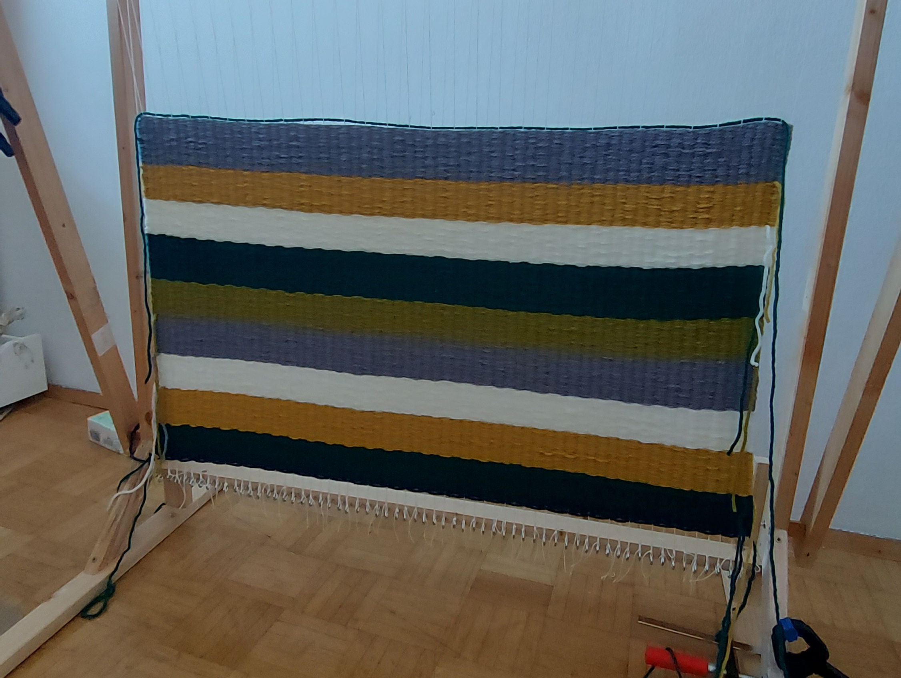
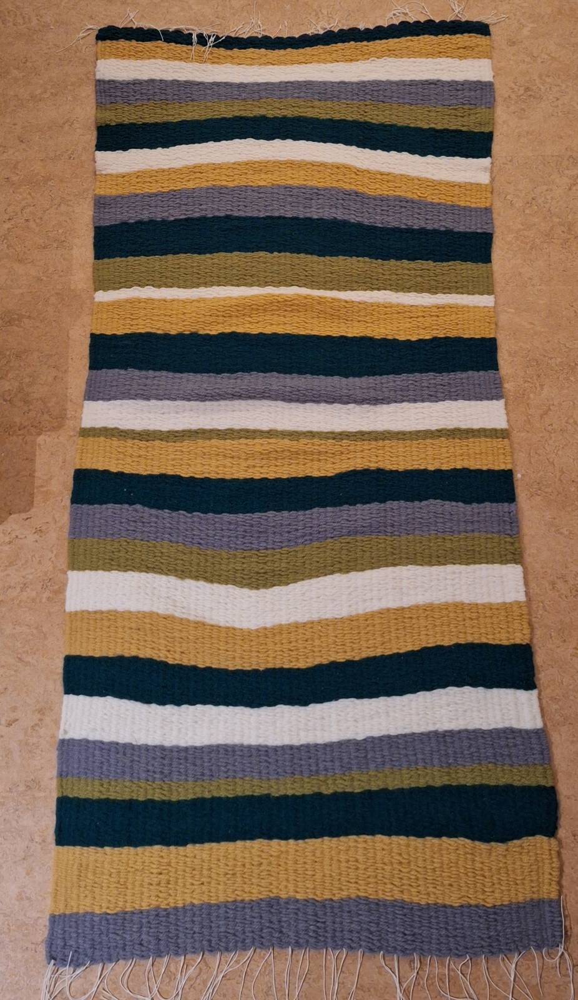
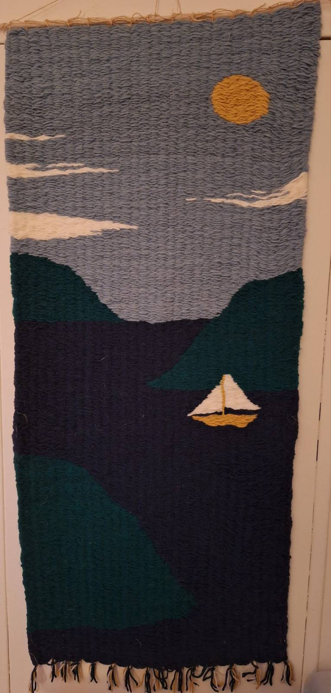

Woven thread by thread — a network made to endure.
The Art of Weaving
Weaving is among humanity’s oldest crafts. Long before writing, people wove cloth to protect the body, mark belonging, and store meaning in pattern and repetition. Looms turned fragile threads into durable fabric, and in doing so mirrored society itself: individual effort bound into collective structure. Today, weaving has lost none of its relevance. In a world of speed and disposability, it stands for care, longevity, and deliberate connection. Whether practiced by hand or echoed in modern systems, weaving reminds us that strength does not come from single strands, but from how they are joined.

Why I got into it
I got into weaving because it slows me down.
It turns loose threads into something that holds, without haste or noise.
In a world obsessed with speed, weaving insists on patience —
and reminds me that making something durable is still a meaningful act.
I started by buying simple pieces of wood from a hardware store — nothing refined, nothing special.
At home, I cut, drilled, and assembled them into a basic weaving frame. It wasn’t perfect, but it was mine.
Building the loom myself made the process tangible from the very beginning:
understanding the tension of the frame, the limits of the material, and the quiet satisfaction of creating a tool meant solely for making.
NEWS: Upgrading the Frame
After working with the basic frame for a while, I upgraded it. I built a second, movable frame that holds about half of the warp threads and can shift back and forth. This simple addition changed everything: instead of threading the weft in a slow zigzag, the movement creates a clean V-shaped opening in the warp. The thread passes through in one motion — calm, direct, almost effortless. It turned weaving from a careful struggle into a fluent rhythm, and the loom from a static object into a responsive tool.
Past Projects

